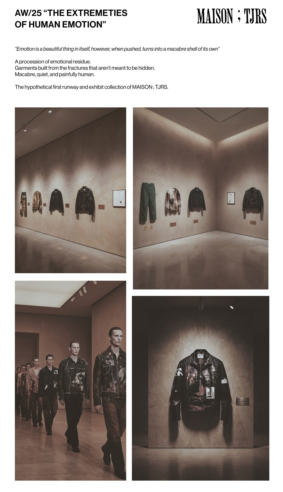
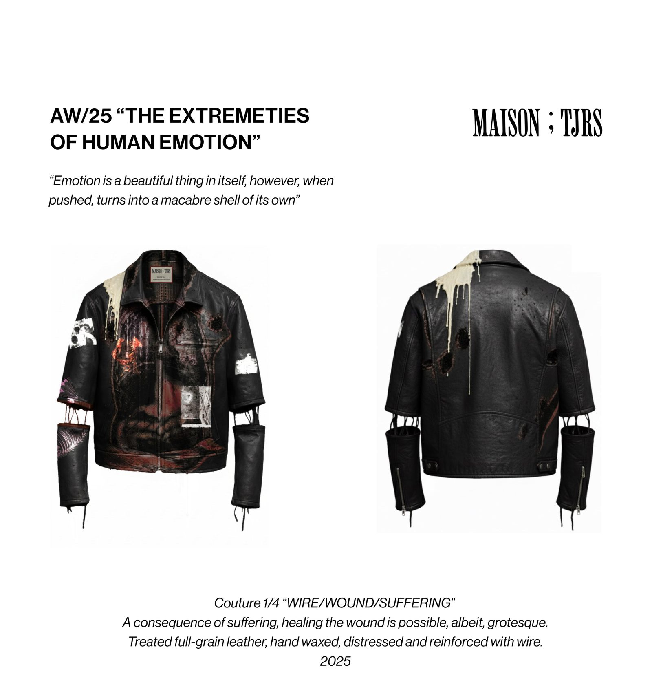
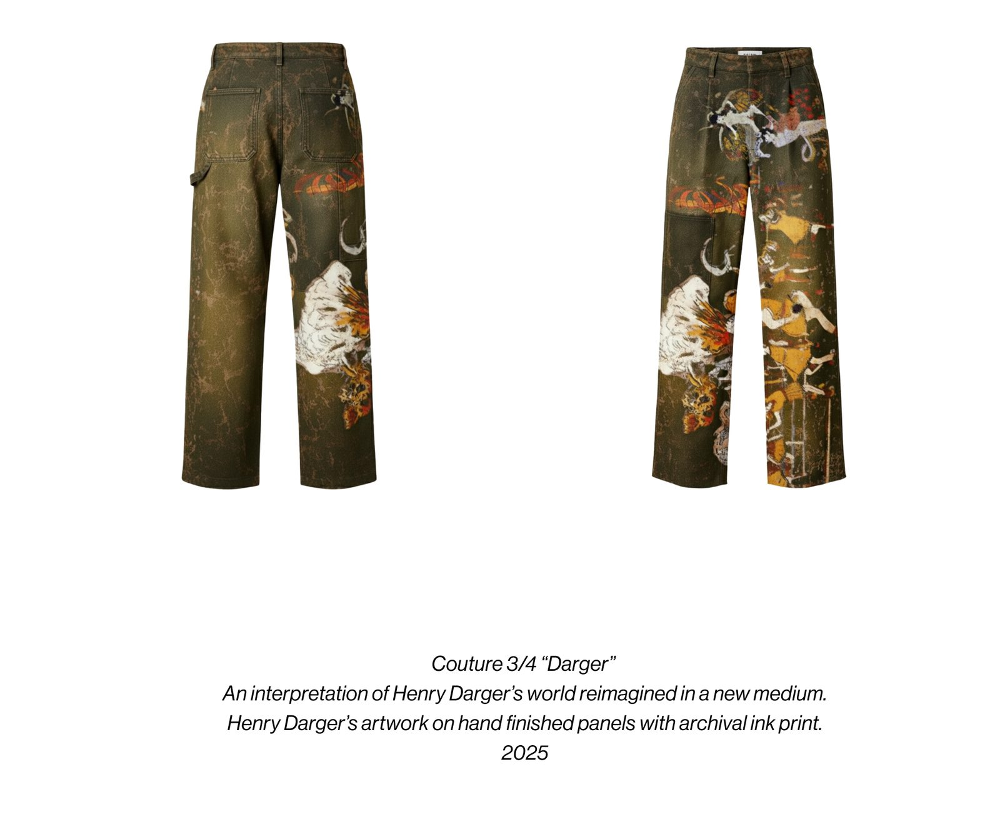
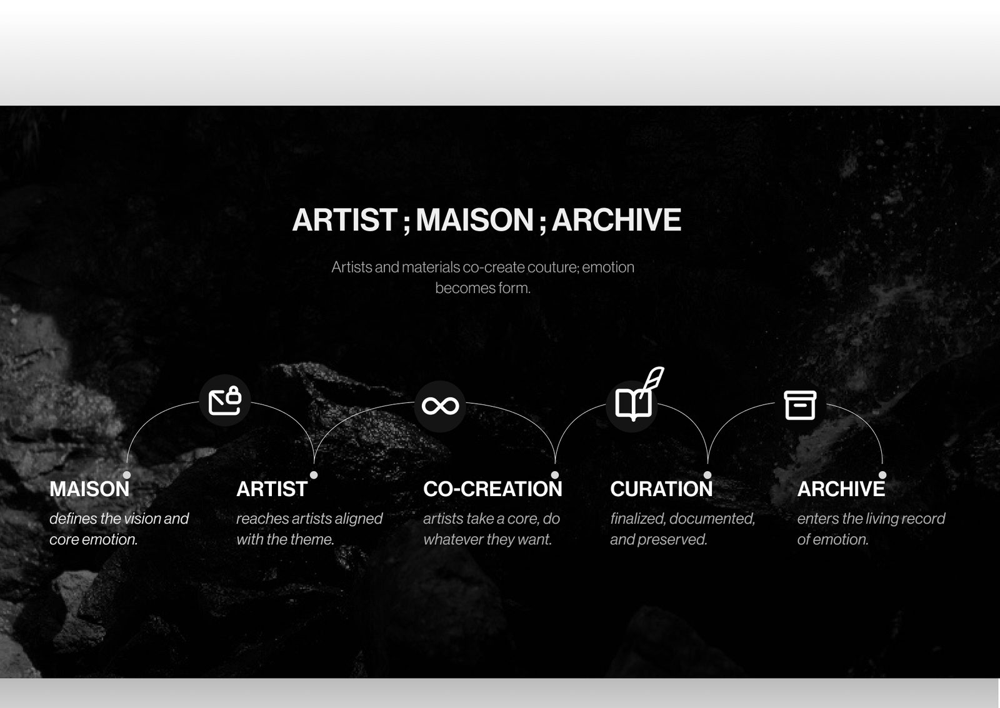
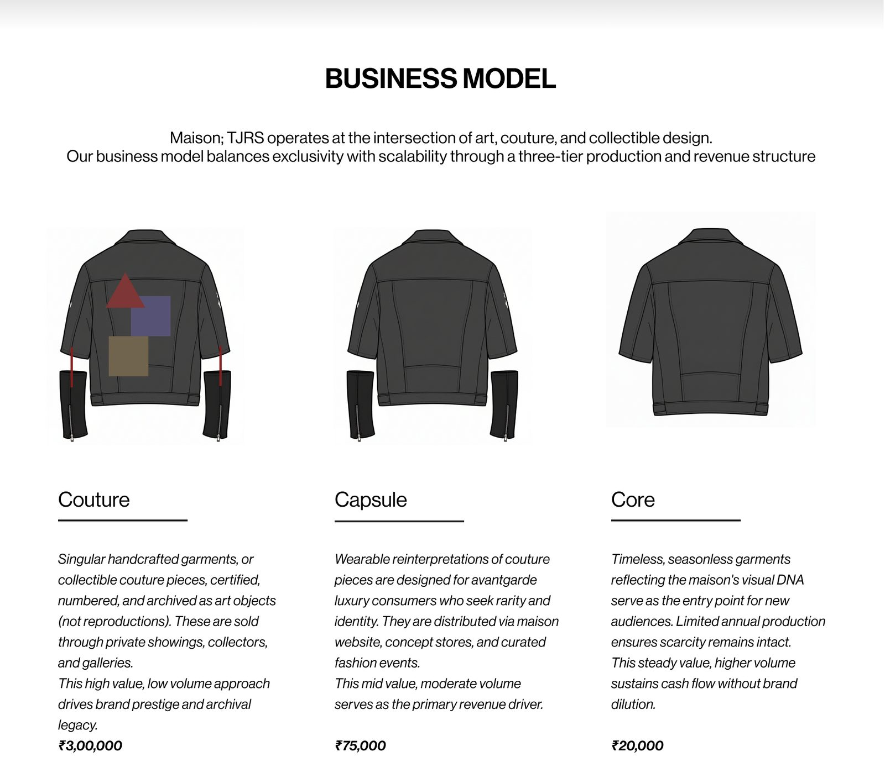
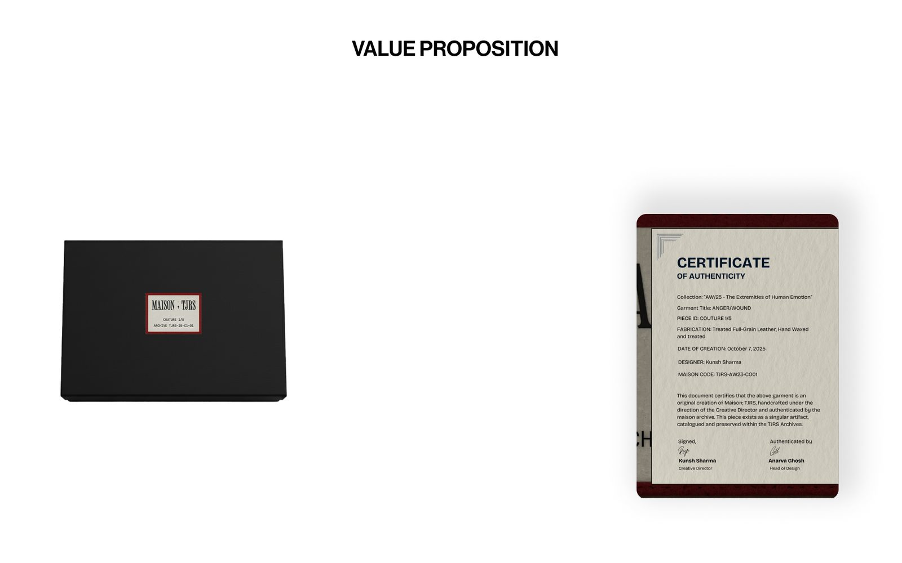

A concept couture maison where artists co-create garments that are archived as emotional artifacts, not sold as seasons.

Art is confined to galleries and fashion chases seasons instead of keeping stories. Maison ;TJRS brings the two together: every garment is made with an artist, numbered, certified and kept in a living archive.
Full-grain leather, hand waxed, distressed and reinforced with wire. Healing is possible, albeit grotesque.

Henry Darger's world reimagined in a new medium, on hand finished panels with archival ink.

The maison defines the emotion, artists co-create, and every piece is curated into the archive.

Couture for collectors, capsule for avant-garde buyers and a seasonless core, so scarcity funds the house without diluting it.

Every garment ships with a certificate of authenticity and a place in the TJRS archive.

The full case study, with every step of the process, is on Behance.